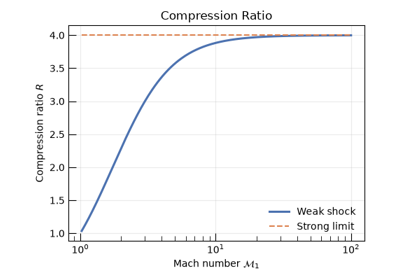
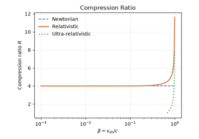
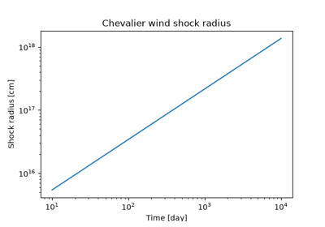
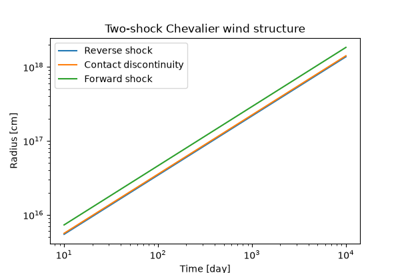
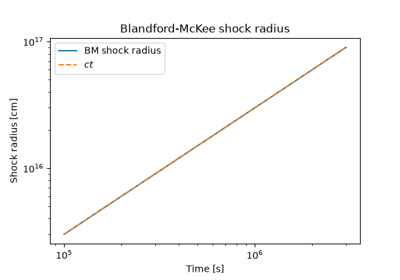
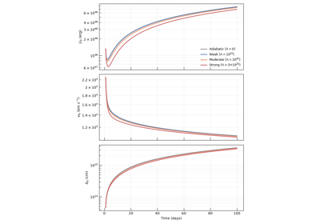
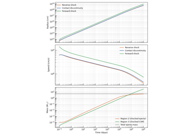
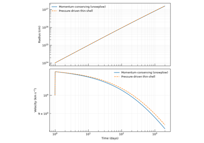
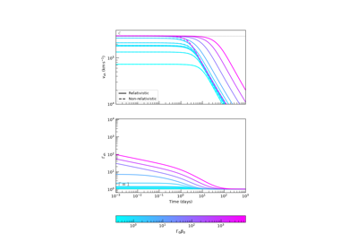
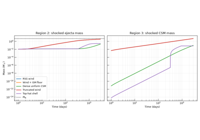

Shock Dynamics#
This gallery covers the full chain of shock-dynamics physics in Trilobite — from the fundamental Rankine–Hugoniot jump conditions, through the numerical thin-shell engines that can evolve a blast wave through an arbitrary circumstellar medium, to the Chevalier self-similar analytic solutions for power-law density profiles.
Examples are grouped into four progressive sections:
Shock Physics Basics — Newtonian, relativistic, and ultra-relativistic RH relations
Numerical Shock Engines — pressure-driven thin-shell engines, CSM environment survey, and relativistic-to-non-relativistic convergence
Mechanical Shock Engine and Radiative Cooling — two-region mechanical engine and the effect of \(\rho^2\) radiative losses on the shocked-shell structure
Self-Similar Shock Models — Chevalier two-shock self-similar solution and its physical-space profiles
Theory and API
For jump-condition theory, see Methods: (Non-Relativistic) Jump Conditions and Methods: (Relativistic) Jump Conditions. For numerical engine theory, see Theory: Numerical Shock Engines. For self-similar solutions, see Theory: The Chevalier Self-Similar Solution. For the API, see The Rankine-Hugoniot Jump Conditions, Numerical Shock Engines, and Self-Similar Shock Engines.
Shock Physics Basics#
These examples cover the Rankine–Hugoniot relations that connect upstream (pre-shock) to downstream (post-shock) states via conservation of mass, momentum, and energy. They sweep from the subsonic limit through the Newtonian strong-shock approximation to the fully relativistic regime, showing where each approximation is valid.
These are the right starting point if you want to understand why shocks produce the compression ratios and temperature jumps that drive synchrotron and thermal emission before working with the higher-level shock engines.
Theory: Methods: (Non-Relativistic) Jump Conditions, Methods: (Relativistic) Jump Conditions
API: The Rankine-Hugoniot Jump Conditions

Weak vs Strong Shock Jump Conditions (Cold Medium)

Rankine–Hugoniot Jump Conditions: Newtonian to Ultra-Relativistic
Self-Similar Shock Models#
These examples explore the analytic self-similar solutions for supernova shock interaction with a power-law circumstellar medium (CSM) — the Chevalier framework — in which the entire two-shock structure (forward shock, contact discontinuity, reverse shock) scales with a single power of time.
They cover how to construct the self-similar solution, map it to physical coordinates at a series of snapshot times, and interpret the internal density and pressure profiles of the shocked layers.
Use these examples when working with idealized power-law density profiles where a closed-form solution is available and computationally preferable to a full numerical integration.
API:

Chevalier Self-Similar Shock in a Steady Wind

Two-Shock Chevalier Self-Similar Evolution in a Steady Wind

Blandford-McKee Ultra-Relativistic Blast Wave
Numerical Shock Engines#
These examples demonstrate Trilobite’s thin-shell shock engines — the numerical integrators that evolve blast-wave radius, velocity, and swept-up mass through an arbitrary circumstellar medium (CSM) density profile.
Four engines are covered:
PressureDrivenThinShellShockEngine— the standard non-relativistic pressure-driven thin shellRelPressureDrivenThinShellShockEngine— the fully relativistic variant; shows where \(\Gamma\beta \gtrsim 1\) corrections become essentialCSM environment comparison (thin shell) — same ejecta launched into ISM, wind, truncated wind, and shell density profiles using the
PressureDrivenThinShellShockEngineCSM environment comparison (mechanical) — same comparison using the
MechanicalShockEngineto show how CSM structure separately imprints on the forward and reverse shock
Use these examples when you need to evolve a shock through a realistic, non-power-law density profile.
API: Numerical Shock Engines, profiles_user_guide

Radiative Cooling in the Mechanical Shock Engine

Mechanical Shock Model: Forward and Reverse Shock Evolution

Momentum-Conserving Snowplow Shock Evolution

Relativistic vs. Non-Relativistic Thin-Shell Convergence

MechanicalShockEngine: Forward and Reverse Shocks in Different CSM Environments